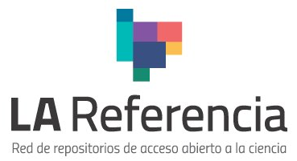

Descripción:
El portal La Referencia permite explorar la producción científica de las instituciones de educación superior de América Latina.
Áreas: Ingeniería, ciencias básicas, medicina, educación y otras
Idioma: Español
Acceso: Acceso libre